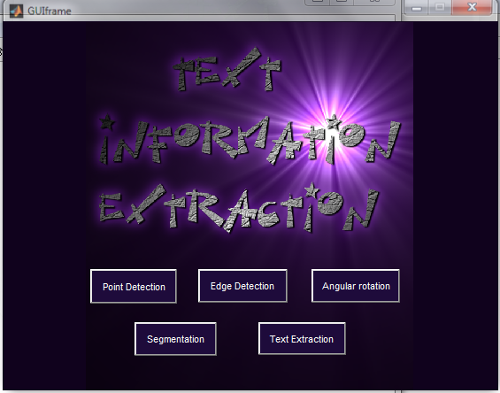

function varargout = GUIframe(varargin) % GUIFRAME M-file for GUIframe.fig % GUIFRAME, by itself, creates a new GUIFRAME or raises the existing % singleton*. % % H = GUIFRAME returns the handle to a new GUIFRAME or the handle to % the existing singleton*. % % GUIFRAME('CALLBACK',hObject,eventData,handles,...) calls the local % function named CALLBACK in GUIFRAME.M with the given input arguments. % % GUIFRAME('Property','Value',...) creates a new GUIFRAME or raises the % existing singleton*. Starting from the left, property value pairs are % applied to the GUI before GUIframe_OpeningFcn gets called. An % unrecognized property name or invalid value makes property application % stop. All inputs are passed to GUIframe_OpeningFcn via varargin. % % *See GUI Options on GUIDE's Tools menu. Choose "GUI allows only one % instance to run (singleton)". % % See also: GUIDE, GUIDATA, GUIHANDLES % Edit the above text to modify the response to help GUIframe % Last Modified by GUIDE v2.5 13-JAN-2013 15:05:12 % Begin initialization code - DO NOT EDIT gui_Singleton = 1; gui_State = struct('gui_Name', mfilename, ... 'gui_Singleton', gui_Singleton, ... 'gui_OpeningFcn', @GUIframe_OpeningFcn, ... 'gui_OutputFcn', @GUIframe_OutputFcn, ... 'gui_LayoutFcn', [] , ... 'gui_Callback', []); if nargin && ischar(varargin{1}) gui_State.gui_Callback = str2func(varargin{1}); end if nargout [varargout{1:nargout}] = gui_mainfcn(gui_State, varargin{:}); else gui_mainfcn(gui_State, varargin{:}); end % End initialization code - DO NOT EDIT % --- Executes just before GUIframe is made visible. function GUIframe_OpeningFcn(hObject, eventdata, handles, varargin) % This function has no output args, see OutputFcn. % hObject handle to figure % eventdata reserved - to be defined in a future version of MATLAB % handles structure with handles and user data (see GUIDATA) % varargin command line arguments to GUIframe (see VARARGIN) % Choose default command line output for GUIframe handles.output = hObject; % Update handles structure guidata(hObject, handles); % UIWAIT makes GUIframe wait for user response (see UIRESUME) % uiwait(handles.figure1); % --- Outputs from this function are returned to the command line. function varargout = GUIframe_OutputFcn(hObject, eventdata, handles) % varargout cell array for returning output args (see VARARGOUT); % hObject handle to figure % eventdata reserved - to be defined in a future version of MATLAB % handles structure with handles and user data (see GUIDATA) % Get default command line output from handles structure varargout{1} = handles.output; % --- Executes on button press in pushbutton4. function pushbutton4_Callback(hObject, eventdata, handles) %Segmentation clc; J = imread ('C:\Users\user\Documents\bapu work\TI\tiecd\gray111.jpg '); figure; I = rgb2gray (J); subplot (131), imshow (I); title ('original image') % The following MATLAB function to calculate the threshold level = graythresh (I); %Otsu method to calculate the global threshold of image I BW = im2bw (I, level); % Threshold segmentation subplot (132), imshow (BW) title ('graythresh calculating a threshold value') disp (strcat ('graythresh calculated grayscale threshold: of', num2str( uint16 (level * 255)))) % The following MATLAB program to simplify the calculation value iMax = max (max (I)); iMin = min (min (I)); % Calculated maximum and minimum values T = double (iMin: iMax); iSize = size (I); muxSize = iSize (1) * iSize (2); for i = 1: length (T) % Variance were calculated from the minimum gray value to the maximum value TK = T (1, i); iForeground = 0; iBackground = 0; % Define the foreground and background of the number of ForegroundSum = 0; BackgroundSum = 0; % Define the foreground and background grayscale sum for j = 1: iSize (1) for k = 1: iSize (2) tmpData = I (j, k); if (tmpData >= TK) % Foreground pixel point calculation iForeground = iForeground +1; ForegroundSum = ForegroundSum + double (tmpData); else %The calculation of the background pixels iBackground = iBackground +1; BackgroundSum = BackgroundSum + double (tmpData); end end end % Proportion of the foreground and the background and the average gradation value % There is a 0 denominator, causing alarm, the solution is simple, but does not affect the results, the reader is improved w0 = iForeground / muxSize; w1 = iBackground / muxSize; u0 = ForegroundSum / iForeground; u1 = BackgroundSum / iBackground; T (2, i) = w0 * w1 * (u0-u1) * (u0-u1); % Second is to calculate the variance end oMax = max (T (2, :)); % Second line of maximum variance, slightly NaN idx = T (2, :) >= oMax; % Variance corresponding to the maximum column number T = uint8 (T (1, idx)); % From the first line to remove the gray value as a threshold value disp (strcat ('the simplify Otsu method to calculate the grayscale threshold:',num2str (T))) BW = im2bw (I, double (T) / 255); % Threshold segmentation subplot (133), imshow (BW) title ('Otsu threshold') % --- Executes during object creation, after setting all properties. function axes1_CreateFcn(hObject, eventdata, handles) axes(hObject) imshow('C:\Users\user\Documents\bapu work\TI\tiecd\tie11.png') % Hint: place code in OpeningFcn to populate axes1